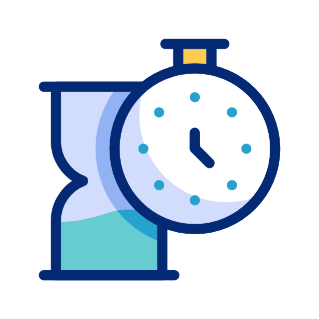
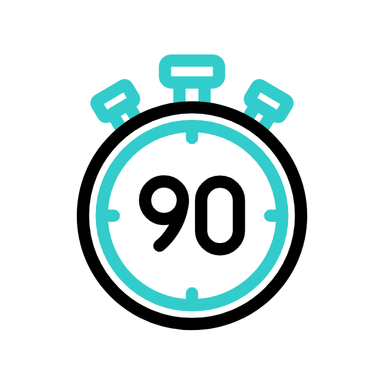

¡Bienvenidos a tu nuevo aliado en el tiempo!
En nuestra página, te ofrecemos cronómetros rápidos, seguros y totalmente flexibles, diseñados para adaptarse a tus necesidades en cualquier momento. Ya sea para medir el tiempo en tus entrenamientos, proyectos, exámenes o cualquier actividad que requiera precisión, nuestros cronómetros son la herramienta perfecta para mantenerte al día con cada segundo. Disfruta de un servicio confiable, fácil de usar y con total seguridad, ¡porque el tiempo es lo más valioso y sabemos cómo aprovecharlo al máximo!